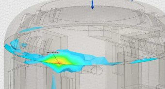
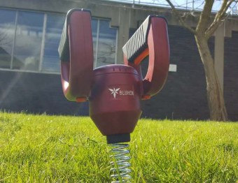

1

LUKE TOLCHARD | - - - - - -

CONTENTS
RE-INTRODUCTION 3
MODELLING 5
REFINEMENT 9
MATERIALS & MANUFACTURE 16
FINAL DESIGN 18
USER FEEDBACK 23
PROJECT EVALUATION 25
2

CONCLUSION 27

.


RE-INTRODUCTION
I have decided to create a Weed Removal Tool for the brief of the electrically powered tool. The reason I chose to do it in this brief is because it is better suited to the design scope of Bosch. They are primarily an electrically driven company whether that be cordless or corded with a few petrol-powered products in the range.

We Created and Identified our core values for our sub-brand BLÜHEN: Inclusive Design is our passion
Usability is key for a product to succeed To create a Functional product Affordable products for the masses Reliability for consistent performance Aesthetically exquisite
User Identification and the Problem: Richard helps a lot of his neighbours, whether that’s around the house, DIY work, or Gardening. I mentioned some of the previous research that I have compiled and he really liked the idea of a tool to remove the weeds. He said, “Weeds are frustrating as they keep coming back, so if I could get rid of them easily then that would make my life a lot easier.”
Solution to the problem:

By designing a tool that removes the physical work by utilizing a motor. This would mean that less strain is put on the users hands and thus help people whom suffer with arthritis. Not only that it would also help individuals who are elderly as they fatigue faster than the younger generation do.

2.


PRODUCT PROTOTYPING

Prototyping is a crucial step to understanding the real life limitations of the design. I’m expecting to come across several problems when testing my first prototype so I’ll be Iterating the design as I go along and make any changes that I see fit. Once I had the dimensions for my design I made a prototype out of yellow foam. I wanted to get an idea for the size of the product and what I need to change before going to consult my user for feedback.


I designed the handles with enough room to fit all 4 fingers in with room to spare on each side. This should allow for an ergonomic fit. Further more from researching the sizes of power drill handles from well established brands I was able to get a rough estimation for the side that my handles should be (this turns out to be around 38mm - 40mm in height and 30mm in width).
The shape is semicircular as I found that this was the most comfortable and effective way of attaching the handles to the body of the Weeder. The shape of the handles will naturally guide the user into the correct stance when operating the product.

The weight of the product will be going parallel with the handles and thus the users hands and arms.


I decided to create the Weeders body cylindrical as a circle is the best shape for ‘reflecting’ damage from dropping and/or any other impact that it might encounter during its product life. Moreover, the bottom third is rounded over this will further help its impact resistance. There are no straight edges on this prototype and that’s because they would lead to a concentrated area of stress which I want to avoid.
Very similar to the first design however this one is more refined. Instead of having the bottom third all rounded having a chamfer with filleted edges will preform just as well whilst using less material in the manufacturing stages.
Having the tool starting inside the housing does mean that it will be protected however having something internal does mean I’ll need to consider having a different way of protecting the insides from dust, moisture and mud.

Having the tool this way would be a lot easier for the construction of this product as I could mimic what a power drill does by having an extension from the axis of the gear box.

3.


MEETING WITH CLIENT
After creating the prototype I had a meeting with my client and we discussed what was good and things to improve on. This is a crucial step so I know what I’m creating is the best outcome for this project.
Richard was initially sceptical by the design, however, after explaining the he purpose of the product he began to understand the features and why it was designed the way it was.
I asked him to assume a natural position and I was happy to see that his position was within the guidelines that I set out. We further advanced onto the pros and cons of the design.
Handles are comfortable to hold
Simple shape
Handles need to be slightly wider
He prefers the rounder handles but likes the width of the flatter handle
Handles need to be further away from the body as he hit his hands on the way in and out

The body could be a little more refined in shape and size.


METHODS OF TESTING
The importance of user testing is vital to the creation of products. Below are the steps listed and the evaluation that I recovered from such testing.
Handle design
Designing the handle for a comfortable use over a prolonged period of time is important for me, I needed to finalise this design and so I requested feedback for the handles and we came up with these points:
Increase the thickness of the handle
Incorporate a grip as its slippery to hold due to the curves
Shape of the body
I took both the body designs to my user and he said that the design of the ureal (pink) body is preferred as he said that it represents a tool better than the rounded design (yellow). I believe that he went for this one due to the aesthetics rather than the functional aspects of it (even though both through testing preformed equally), I believe that this is down to the way that we look at tools where sharper edges look more powerful and increase the overall manliness of the product. For example a triangle looks more powerful than a circle and hence way the shape is used for danger signs.
Positioning of the handles
As I just attached the handles to the body with screws it was easy to adjust the height of them by removing and then repositioning them. we finally settled for a design which had the handles 25mm from the connection point to the top of the product (looking side on). This allowed the user to 1, get their hands in easily and unobstructed; 2, still allowed for sufficient security of the handles; and 3, as I need to change the thickness of the handles I needed to have more space to accommodate the closing of the gap.
Improve the placement of the coil / screw

The model has the screw inside the product however I believe that would be worse for the product as I would have to have a smaller motor and gearbox assembly. My client agreed and we thought up of some different ideas and agreed on that if I could mimic something like a drill I would then be able to have a larger motor and gearbox assembly. The design should be simple and my client suggested having the coil / screw somehow combined with the holder (like a drill chuck but permanently attached).


CAD MODELLING - BODY
From the notes that I made from the meeting with Richard I got to work creating the Weeder on SolidWorks. I tried my hardest to create all the components so that they could be manufactured by either CNC or injection moulding (this is so they could be mass manufactured and be easier for the prototyping stage).
The body of the Weeder is made up of 3 components. They consist of the TOP, LEFT shell, and RIGHT shell. The left and right shell are mirror components however the right shell is male and the left is female (i.e. the left shell has reference holes for the right shell).

The ribs are designed to hold the motor and the gear box in place.


CAD MODELLING - HANDLES
The Handle is made up of 5 main components and 2 sub components.
They are as followed:
Handle left
Handle right
Grip
Trigger
Release
Screws (X4)
Power connectors (X2)
Like the Body this has a male (Right) and female (Left). The Grip is over-moulded on the handle which also hides 2 of the screws.
The areas of movement are highlighted by the orange colour (even though this isn’t one of BLÜHEN colours I chose it as it stands out from the burgundy and it’s obvious what they are intended for. I took inspiration from Dyson Vacuum cleaners as they use different colours to define user contact areas.

I also adjusted the power connectors so they hold onto the shell securely.


CAD MODELLING - INTERNALS
The Internals for the product have changed dramatically.
Firstly, I have added a motor and planetary gear assembly to appropriately represent what the model will look like.
I’ve added a housing to hold the motor inside the Weeder body.
The ribs appropriately hold motor and planetary gears in side with no need for screws as the ribs hold everything in place.
The Coil Holder has slots for bearings and the Baring Ring surround it which reduces friction and increased efficiency.
one component.
Furthermore, the Coil Holder will be injection moulded in with the coil (the auger like tool) to form essentially

Finally, the screws are M3 self tapping screws which hold both body halves together.


VIRTUAL TESTING

All of the following testing uses 100N as the standard force; the force is coming down and from either side of the body. The image above shows the localised ‘Pressure’ starting at a single point where the Top and the Right half of the body make contact.
The dark blue has a ‘Safety Factor’ of 8+ (i.e. it can withstand upwards of 800N (≈ 81.5773Kg)). I have only highlighted the areas of lower safety factor. What’s important to take away from this is that the area that has the lowest safety factor rating (1.82) is the corner of the Weeder body power connector; this is due to a 90° corner.
The dark blue represents low/well designed areas to combat ‘Stress’. The slight discolouration provides insight into what’s getting compressed. As shown on the image, the sides are flexing slightly as is the Top. This displacement is very small but shows that if I needed to I would have to add support in those areas.
The Body is over-engineered and this is shown by its superior strength. Reducing wall thickness’s would be advised.

4.


The Prototype Manufacturing of my product is fairly simple. With few materials and only several parts. As I’ll be making two models, One for my Aesthetical and another one for my Functional model there will be two materials listed for each component colour coordinated to the Aesthetical - Burgundy, and, Functional - Grey.
COMPONENT | MATERIAL | PROCESS | REASON |
Handle | Ureal | CNC | High accuracy and quickest method of creating these components |
ABS clear | Laser cut | ||
Grip | ABS | 3D print (50 microns) | |
Trigger and Release | ABS | 3D print (50 microns) | |
Bought-in component | n/a | ||
Body | Ureal | CNC | |
ABS clear | Extruded pipe | Shows visible components on the inside | |
Coil | Bought-in component | n/a | A realistic impression on aesthetics |
Bought-in component | n/a |

The table below shows how each component would be manufactured for large volume production. A number of these components will be bought in due to convenience and as I don’t need to invest in the development of them.
COMPONENT | MATERIAL | PROCESS | REASON |
Handle | ABS | Injection Moulding | Quickest and most efficient way of manufacture for these parts. Also repeatability and accuracy is extremely consistent |
Body | |||
Trigger | |||
Release | |||
Coil holder | |||
Motor holder | |||
Gearbox casing | |||
Coil cover | |||
Grip | Silicone | Overmoulding | Best way to form the grip |
Power connector | Aluminium ASTM - B 231 | Cutting & Flanging | First need to cut the shape out and then role-over the one end |
Coil | High Carbon Steel | n/a | Bought in components. No need to invest resources into this process |
M3 Screws (20mm) | Low Carbon Steel | n/a | |
Bearing | Stainless steel | n/a | |
Switches | n/a | n/a |

5.


As I created all the CAD files early on in the conceptual design process (IKB Part1) I was able to easily modify them quickly. This meant I could get to the workshops early and get my components 3D printed/CNC’ed. I chose to get my components done via a machine not only for the convenience but also for the fact that I could invest my time and resources into other things. For example I got my handles completed and whilst the body was being CNC’ed I sanded, primer’ed, and painted the handles.
I utilised the CNC machine to create an accurate model of my body. I chose to do it this way as not only is it accurate but its repeatable if I mess up one of the components I could get another one cut. As I needed to make sure that the holes for the handles were exactly in-line with one another it just made sense to get the CNC machine to do it for me.

Again I used the CNC machine to manufacturer the handles. the reason for this was due to the fact that i needed to make sure that they were exact so the ‘Grips’ would fit over them.


I used the 3D printer to manufacture these. Like I said for the ‘Handles’ I used this method of manufacturing as it’s incredibly accurate and secondly it would have been extremely difficult to create these by hand due to their complexity.
This was the final part(s) that I made using the 3D Printer. As I wanted to make these fast and efficiently this was the best method to create these components. Small and quick, I got these components done at the same time as my handles so I had everything ready at the same time.

I made this component on the lathe as it was very simple to manufacture. I filleted the corners just using sandpaper. For the coil I purchased a compression spring to represent the coil. I realised that it would be too complex to put the spring on the outside so I made a hole for the spring to go into and then held it with epoxy.


This is how the product would work if it was to be manufactured in industry. The diagram is simple but that because the design of the Weeder is simple. The product works with two switches which at rest are off and thus the motor doesn’t spin. Both switches must be pressed to activate the motor.


This shows how the product works in a very rudimentary way. I tried to keep the general shape of the Weeder so those who look at it can see the resemblance. As the internals are similar to a drill I have decided to utilise an existing 12V drill and just add another push switch to replicate the function.

6.


After creating the final model I went to my user and asked him what he thought of it and to see if it met the expectations. Before I gave him any hints at what I improved since last time I also bought along my old model for him to compare the two and I was ecstatic when he when onto say that he thought that this was an actual off
The key points that we came up with are:
The product seems well made and the design of it makes sense to him. It was clear where he should place his hands and how she should operate the Weeder.
The grips are tactile enough to be used in wet conditions and still have suitable features to compliment grip.
The product doesn’t weigh that much (I used SolidWorks to find out what the weight of the product is and used a steel rod epoxied in place to simulate the correct weight of the product).
The colour really stands out.
He liked the ideas of the handles being removed but he did comment that the release for it maybe too hard to press or even find without a manual.

Overall though he was satisfied with the final model and thought that it represented the idea well.

7PROJ.ECT


I’m very happy with this project and the outcome of it, I think I created a product which is well made and representative of the problem I set out to address.
Though I’m happy I think I would in future change a few things, one of them being trying to find a spring which had wider spacing to represent what I really wanted to achieve.
I would also make the handles just a little bit smaller, probably by 3mm - 5mm. I believe that this would fit with better ergonomics and therefore the comfort would increase.
I would also like to further refine the ‘Coil Holder’ to make it slightly more aesthetically pleasing. I would also like to find a way of making it removable so you could store and package it better.
I believe that as a way to combat weeds this product would work, I also believe that it is well representative of the Blühen sub-brand and recognises the innovative progression that Bosch possess. The uniqueness of the product is a statement for anyone who uses it and is by sure to turn heads in allotments, gardens and professional situations.
When designing and manufacturing the product I was always conscious of the core reason for this project which was to design for the kinetically limited (mild disabilities). I wanted to create a product which would remove the physical labour of gardening and offer the chance for users who couldn’t experience the joys of gardening to reconnect with that once distant enjoyment.
In terms of functionality and being able to create a product which was simple to use whilst also being effective at the job I conclude that I have achieved this. Weeds are a troublesome plant and this product will increase the ease of gardening.
The size of this product could be reduced however, the size is only complimentary to the components that I have access to and the requirements set out by the brief.

However, all other aspects of the product shine through, ever brightening the future for gardeners around the world who suffer from limitations that restrict their movement.

8.
1
2
3
4
5
6
Design Development Further Modelling Further Research Final Design
User Testing Project Deliverables

DATE (start of IKB2)


I wasn’t far off with what I set myself to do. I believe that the time scale was well thought out.
I’ve highlighted the main topics that I felt are necessary to this project. I can show that
The start of the project is hectic but this allowed me more time towards the end to finish everything.
Estimated Time
Actual Time Taken
Including IKB1 & 2 in this conclusion I feel like I have learnt a lot especially to do with respecting the user and their needs (NDA form and Data Protection Act). This wasn’t my first experience in group work but it is the first for me working as a part of a team that is designing more than one product. I feel that we all did well to define and come up with a suitable goal that I feel we/I have accomplished.
During the testing stages my client was extremely helpful in listing what improvements to make and was very open to the idea of helping my out for my project. I felt like we worked well in person and via letters we sent to one another.
The most challenging aspect of this entire project was actually trying to find something worth improving / something that hasn’t been done before as the Garden Tool Market is so saturated already. I believe that I have found a good project to work towards and my goals were achievable. Moreover, I find that motorising a weeder was the only viable option (due to brief and problem we tried to solve). There is definitely a gap in the market for something which is motorises and most importantly I find that it fits well with what Bosch already have (Electronic Tools).
The creation of my model was easy enough as I continuously had the mindset that this product would be manufactured so when designing the components in CAD I included ribs, realistic dimensions and able to be manufactured (this also helped for DFM). Virtual prototyping was a must for this project as without it the design and then the manufacturing of the handles would be a challenging experience.

Overall, this project hasn’t been easy, my tasks and the quality that I wanted my product to be were extremely high and I was tempted to have 2 models just in case one of them got lost or broken. I was weary that my group has several issues and the fact that I actively complained about it shows my concern for this project, we could have functioned better but in the end individual effort was undertaken by each member. I achieved what I set out to do and I’m proud for it.


(n.d.).
Logo of Bosch. [image] Available at: https://seeklogo.com/vec- tor-logo/21523/bosch [Accessed 27 Jan. 2018].
Creative Commons CC0 (n.d.). Green Leaf Plant during Daytime. [image] Available at: http://www.peakpx.com/576508/green-heart-shape-leaf-plant [Accessed 24 Jan. 2018].
Creative Commons CC0 (n.d.). Purple petaled flowers in bloom. [image] Available at: http://www.peakpx.com/393750/purple-petaled-flowers-in-bloom [Accessed 30 Jan. 2018].
HD Wall Source (n.d.). Flower petal. [image] Available at: https://hdwallsource. com/flower-petal-25873.html [Accessed 28 Jan. 2018].
Pexels (n.d.). Grass with due. [image] Available at: https://www.pexels.com/ photo/meadow-grass-sunshine-9056/ [Accessed 4 Feb. 2018].
Pexels (n.d). Green centred plant. [image] Available at: https://www.pexels. com/photo/abstract-green-layers-fine-35196/ [Accessed 4 Feb. 2018].
Pexels (n.d.). White tips of petals. [image] Available at: https://www.pexels. com/photo/blooming-daffodil-floral-flower-371668/ [Accessed 4 Feb. 2018].
Pixels (2018). Close Up Photography of Red Petaled Flower. [image] Available at: https://www.pexels.com/photo/close-up-photography-of-red-petaled- flower-65940/ [Accessed 26 Jan. 2018].
URBANARA (n.d.). NAKUR PLANT POT WITH PLANT. [image] Available at: http:// www.urbanara.co.uk/5285/grey-white-nakur-plant-pot.htm [Accessed 27 Jan.
2018].
Bosch

LUKE TOLCHARD | - - - - - -
WEED REMOVAL TOOL
So what is Pêl? This useful tool can do more than just remove weeds, it’s also capable assisting in the process of bulbing and removal of delicate plants.
The unique design and engineering behind the product makes it lightweight, portable and robust enough to resist anything you throw at it. Current weeders on the market require physical labour to remove alien plants. Pêl utilises high torque and user control to accurately remove soil within the outer diameter of the screw.
The thing that separates this product from other weeders on the market is the gentle nature of this product. Other products are aggressive which leaves the roots behind of weeds - as a consiquence this means they will come back within a week or two. The design and functionality of Pêl means that as the weeds get pulled out so do the roots from the gentle force applied from pulling.
A rechargeable product is essencial for use in the garden so this product makes use if a 12V Lithium- Ion battery which is supported within the body of the Weeder.

Using only the essential amount of material needed to create this product environmental considerations were taken out to ensure a sustainable product. Every component on the product is replaceable even down to the motor.

LUKE TOLCHARD - - - - - -
The non-slip silicone overmoulded handle provides a tactile feel in any weather condition. You can have confidence in knowing that nothing will get in the way of you and your gardening comfort.
Ergonomic trigger design fitting all fingers for complete control over the amount of power sent to the motor.
Maintenance is key to a garden tool and thus the encorperation of removable components comes into play. Not only does this mean that you can keep a tidy product but also if you damage a component or it become unusable you can ring up a local supplier and request a new component. Gone are the days where you have to purchase a new product if it becomes damaged, say hello to the age of renewable gardening and environmentally friendly design.
A though design and the security of the interior has meant that surviving a fall from twice the height of a human is a walk in the park for a product like this. The engineering of the ribs and failsafe points make sure that even through the worst of treatment you can have confidence that you product will walk out on top.
Motorising the world of gardening, Pêl utilises the consistency and power from the motor and gearbox assembly to truly offer an experince that it like no other. The rotational velocity from the 12V DC motor is reduced through the gearbox which increases the output in torque. This raw power can slice through even the toughest earth in any location.
The screw sinks into the ground slowly making sure that any roots are secured within the grips of the screw. The 120mm length makes it able to sink down to the bottom of any root system and by gentally applying force to pull it out you can remove all reminiscence of plant material having the confidence knowing that the weed shall never grow back
LUKE TOLCHARD - - - - - -